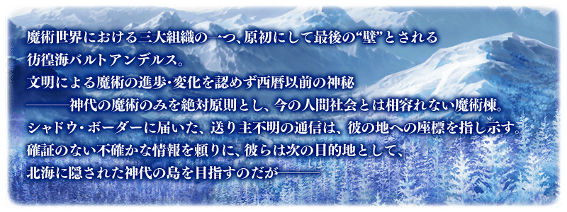

感謝您使用「Fate/Grand Order」。
2018年7月18日(三)在「Fate/Grand Order 迦勒底放送局 Vol.9 不滅之火的好漢 配信前夕SP」發表了「Fate/Grand Order」、Fate/Grand Order的3周年記念現實活動「Fate/Grand Order Fes. 2018 ～3rd Anniversary～」、FGO PROJECT新系列「Fate/Grand Order Memories」、Fate/Grand Order×現實逃脫遊戲「謎特異點Ⅰ 逃離貝克街」、英靈召喚隊伍戰鬥「Fate/Grand Order Arcade」相關的新情報。
以下介紹一部份新情報。
◆主線關卡第2部 第2章「Lostbelt No.2 無間冰焰世紀 諸神黃昏 不滅之火的好漢」的開幕發表！◆

「Fate/Grand Order」的第2部『Fate/Grand Order -Cosmos in the Lostbelt-』的第2章「Lostbelt No.2 無間冰焰世紀 諸神黃昏 不滅之火的好漢」自2018年7月18日(三) 21:30開幕。
舞台是做為第2異聞帶的北歐。自雪和火焰覆蓋山嶺的世界繼續開始故事。
■公開時間
2018年7月18日(三) 21:30～
詳情請在此處的公告確認。
◆niconico生放送特別節目連動宣傳活動報酬贈送！◆
贈送在「Fate/Grand Order 迦勒底放送局 Vol.9 不滅之火的好漢 配信前夕SP」內進行的特別節目連動宣傳活動的報酬！
※特別節目及連動宣傳活動已結束。
向2018年7月19日(四) AM3:59前通過「特異點F 炎上汙染都市 冬木」的Master贈送聖晶石12個。
|
■對象期間 ■贈送內容 ■領取條件 |  |
◆「Fate/Grand Order Fes. 2018 ～3rd Anniversary～」最新情報！◆
公開記念「Fate/Grand Order」配信開始3周年的現實活動「Fate/Grand Order Fes. 2018 ～3rd Anniversary～」的最新情報。
■舞台活動在niconico生放送的播送決定
「Fate/Grand Order Fes. 2018 ～3rd Anniversary～」內的舞台活動「Grand STAGE」會在niconico生放送的播送。
※也有不會播送的舞台配信。另外，從7月29日(日) 11:20的「『衛宮家今天的餐桌風景』先行上映会&特別談話舞台」只有特別特別談話舞台的播送。
關於詳情請從下述的URL確認。
「Fate/Grand Order Fes. 2018 ～3rd Anniversary～」官方網站舞台活動頁面
https://fes.fate-go.jp/stage/
【配信預定】
＜7月28日(六)＞
9:00～9:40 「Fate/Grand Order 迦勒底・廣播局」Lostbelt day1
10:10～10:50 劇場版「Fate/stay night [Heaven’s Feel]」特別舞台
11:20～12:00 「Fate/Grand Order」開發陣舞台
12:30～13:10 FGO 雜談 day1
＜7月29日(日)＞
9:00～9:40 「Fate/Grand Order 迦勒底・廣播局」Lostbelt day2
10:10～10:50 「Fate/Grand Order Arcade」特別見面會
11:20～12:00 「衛宮家今天的餐桌風景」先行上映會&特別談話舞台
12:30～13:10 FGO 雜談 day2
14:00～15:30 「Fate/Grand Order」迦勒底放送局 3周年SP
※一部份活動除外
其他線下活動及週邊請參考原公告。
今後也請多多指教「Fate/Grand Order」。